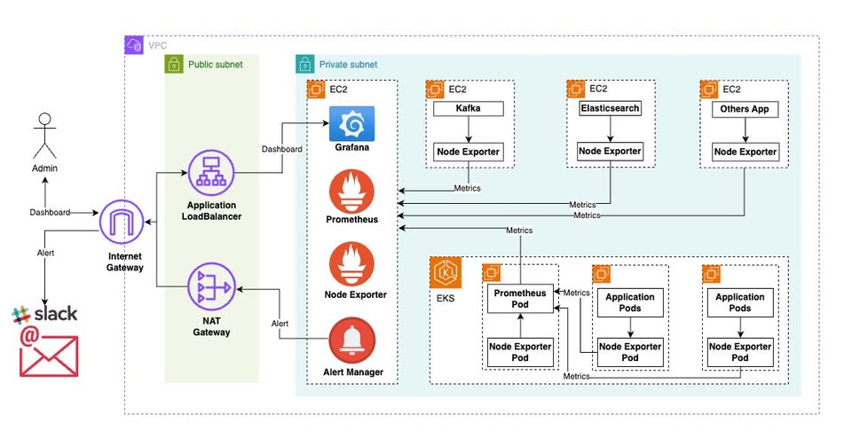

[Project Showcase] AWS Infrastructure Monitoring | Xây dựng hệ thống Monitoring trên AWS
🇻🇳 Bản tiếng Việt nằm ở phía dưới bài viết (Vietnamese version is available below).
[Project Showcase] AWS Infrastructure Monitoring for EC2 and EKS 🚀
Hi everyone! 👋
I want to share a monitoring setup for infrastructure running on AWS: EC2 instances, an EKS cluster, and the services around them. The goal was pretty simple to explain, but harder to get right in practice: when something feels slow or unhealthy, I want to see enough of the system in one place to start asking the right questions.
The two things that taught me the most were less exciting than a new dashboard. Prometheus kept collecting data until its disk started to run short, and Slack became noisy when every alert arrived as if it were urgent. I’ll walk through the architecture first, then share what I changed and what I learned from those problems.
1. The Architecture

The system is placed inside a VPC with public and private subnets. The public side contains the Application Load Balancer (ALB) used by administrators to reach Grafana over HTTPS. Grafana, Prometheus and Alertmanager stay in private subnets; the exporter endpoints should not be exposed directly to the Internet. A NAT Gateway provides outbound access when private resources need it.
The metric path is easier to follow than the network diagram: Node Exporter and application exporters collect metrics → Prometheus scrapes and stores them → Grafana turns them into dashboards. When a Prometheus rule stays true long enough, Prometheus sends the alert to Alertmanager, which groups it and routes it to Slack or email.
The diagram includes EC2 hosts for the monitoring stack and services such as Kafka and Elasticsearch, along with application and monitoring pods in EKS. The exact connection between the in-cluster Prometheus and the central monitoring instance depends on the environment; whichever path is used, it should stay private and have a clear owner.
2. What I Wanted to See
I did not want a dashboard full of numbers just because an exporter could produce them. I focused on signals that help answer “what changed?” and “where should I look next?”
| Area | Metrics I watch | What they can tell me |
|---|---|---|
| EC2 / host | CPU, memory, disk I/O, filesystem space, network traffic | Whether a host is short on resources or a disk is filling up |
| Kafka | Consumer lag, under-replicated partitions, bytes in/out | Whether consumers are falling behind or brokers are under pressure |
| Elasticsearch | Cluster health, JVM heap, indexing and search latency | Whether the cluster is becoming unhealthy or requests are slowing down |
| EKS | Pod status, restarts, CPU/memory requests and limits | Whether workloads are pending, restarting or hitting resource limits |
| Application | Request rate, latency, HTTP 4xx/5xx rates | Whether users are seeing slower responses or more errors |
Node Exporter covers host-level metrics. Kubernetes state needs Kubernetes-aware metrics such as kube-state-metrics, while Kafka and Elasticsearch need their exporters. Applications need to expose metrics in a format Prometheus can scrape. I keep labels such as environment, cluster, namespace and service consistent so I can compare related signals without creating a different dashboard for every host.
3. The First Lesson: Prometheus Needs a Disk Budget
At first, keeping more metrics sounded like the safe choice. Then the Prometheus data grew and the EC2 disk began to fill. That was a useful reminder that monitoring has to be monitored too.
I set a 15-day retention target, increased the scrape interval where minute-level detail was enough, and filtered out metrics that were not helping a dashboard or an alert. Those changes reduced unnecessary data growth while keeping the signals I used for troubleshooting. Retention and scrape frequency still need to fit the workload; 15 days is the starting point for this setup, not a universal answer.
I also keep an eye on Prometheus disk usage, series count and query performance. If longer history or higher availability is required, a single Prometheus process with local disk is not enough by itself; storage, backup and recovery need their own plan.
4. The Second Lesson: Fewer, Better Alerts
The other lesson came from Slack. When too many low-value alerts arrived together, it became harder to spot the ones that needed action. I split alerts into Critical and Warning, grouped related notifications, and used for: 5m for conditions that should remain true before notifying someone.
Here is a small example for low filesystem space. The threshold is only an example; I would tune it to the volume, workload and time needed to respond.
groups:
- name: infrastructure.rules
rules:
- alert: HostFilesystemSpaceLow
expr: |
(node_filesystem_avail_bytes{fstype!="tmpfs",mountpoint!="/run"}
/ node_filesystem_size_bytes{fstype!="tmpfs",mountpoint!="/run"}) < 0.10
for: 5m
labels:
severity: warning
annotations:
summary: "Filesystem space is low on {{ $labels.instance }}"
description: "Less than 10% free on {{ $labels.mountpoint }}. Check disk growth and retention."
for: 5m helps avoid reacting to a short spike, but it should not be copied into every rule automatically. A good alert should say what is affected and point to a useful next step. Slack webhooks and email credentials belong in a secret store, never in the repository.
5. A Few Things I Keep in Mind
- Keep Grafana, Prometheus, Alertmanager and exporters on private network paths. If Grafana is reached through an ALB, use HTTPS, authentication and source restrictions.
- Let Prometheus reach only the exporter ports it needs. Opening an exporter to the public Internet is not a shortcut worth taking.
- Keep thresholds, scrape intervals and retention tied to observed data and operational needs; every extra series and every additional AWS network path has a cost.
- Treat dashboards and alert rules as configuration that should be reviewed, backed up and restored deliberately.
- Use AWS budgets and check the expected cost of EC2, EKS, NAT Gateway, EBS and data transfer before running a lab for a long time.
The repository that accompanies this write-up contains a sanitized reference configuration: a local Docker Compose demo, Prometheus targets and rules, an Alertmanager example, Grafana provisioning, and sample Helm values for an existing EKS cluster. It does not create AWS resources on its own, and its placeholder Slack URL is intentionally unusable.
Closing Thoughts
This project reminded me that monitoring is not about collecting every possible metric. It is about having enough context to notice a problem, understand where it might be coming from, and send an alert that someone can actually act on. The disk issue and the noisy Slack channel were frustrating at the time, but fixing them made the setup much more useful.
You can find the project files here: aws-infrastructure-monitoring.
[Project Showcase] Xây dựng hệ thống Monitoring cho Infrastructure trên AWS 🚀
Chào mọi người! 👋
Hôm nay mình muốn chia sẻ mô hình monitoring cho hạ tầng chạy trên AWS, gồm các máy EC2, cụm EKS và những dịch vụ xoay quanh chúng. Mục tiêu nghe thì đơn giản nhưng để làm cho hữu ích lại không dễ: khi thấy hệ thống chậm hoặc có gì đó không ổn, mình muốn nhìn được đủ thông tin ở một nơi để biết nên bắt đầu kiểm tra từ đâu.
Hai vấn đề khiến mình học được nhiều nhất lại không phải chuyện làm dashboard mới. Prometheus cứ thu thập dữ liệu cho tới khi ổ đĩa EC2 bắt đầu thiếu chỗ, còn Slack thì dần ồn ào vì alert nào cũng được gửi như thể đang khẩn cấp. Mình sẽ nói qua kiến trúc trước, rồi chia sẻ cách xử lý và bài học rút ra từ hai chuyện đó.
1. Kiến trúc tổng quan
Sơ đồ phía trên mô tả hệ thống trong một VPC, chia thành public subnet và private subnet. Phía public có Application Load Balancer (ALB) để admin truy cập Grafana qua HTTPS. Grafana, Prometheus và Alertmanager nằm trong private subnet; các endpoint của exporter không nên mở trực tiếp ra Internet. NAT Gateway cung cấp đường đi ra ngoài khi tài nguyên private cần dùng.
Luồng metric dễ hình dung hơn sơ đồ mạng: Node Exporter và exporter của ứng dụng thu thập metric → Prometheus scrape và lưu trữ → Grafana hiển thị thành dashboard. Khi một rule của Prometheus duy trì đủ lâu, Prometheus gửi alert tới Alertmanager để gom nhóm rồi chuyển tới Slack hoặc email.
Trong sơ đồ có các EC2 chạy monitoring stack và dịch vụ như Kafka, Elasticsearch, cùng application pod và monitoring pod trên EKS. Cách kết nối Prometheus trong cluster với Prometheus trung tâm tùy môi trường; dù chọn cách nào thì luồng này cũng nên nằm trong mạng private và có phạm vi rõ ràng.
2. Những metric mình muốn nhìn thấy
Mình không muốn dashboard có thật nhiều con số chỉ vì exporter thu thập được chúng. Mình ưu tiên những tín hiệu giúp trả lời hai câu: “điều gì vừa thay đổi?” và “tiếp theo nên kiểm tra ở đâu?”
| Khu vực | Metric mình theo dõi | Có thể giúp nhận ra |
|---|---|---|
| EC2 / host | CPU, RAM, disk I/O, dung lượng filesystem, network traffic | Máy thiếu tài nguyên hoặc ổ đĩa đang đầy dần |
| Kafka | Consumer lag, under-replicated partitions, bytes in/out | Consumer xử lý chậm hoặc broker đang chịu áp lực |
| Elasticsearch | Cluster health, JVM heap, indexing/search latency | Cluster không khỏe hoặc truy vấn bắt đầu chậm |
| EKS | Trạng thái pod, số lần restart, CPU/RAM requests và limits | Workload bị pending, restart hoặc chạm giới hạn tài nguyên |
| Ứng dụng | Request rate, latency, tỷ lệ HTTP 4xx/5xx | Người dùng gặp phản hồi chậm hoặc lỗi tăng |
Node Exporter lo phần metric ở host. Trạng thái Kubernetes cần metric hiểu được các object của cluster như kube-state-metrics; Kafka và Elasticsearch cần exporter tương ứng. Ứng dụng phải xuất metric ở định dạng Prometheus scrape được. Mình giữ các label như environment, cluster, namespace và service nhất quán để có thể đối chiếu các tín hiệu liên quan mà không cần tạo dashboard riêng cho từng máy.
3. Bài học đầu tiên: Prometheus cũng cần giới hạn dung lượng
Ban đầu, lưu được càng nhiều metric nghe có vẻ an toàn. Sau đó dữ liệu Prometheus tăng lên và ổ đĩa EC2 bắt đầu đầy. Chuyện đó nhắc mình rằng chính hệ thống monitoring cũng cần được monitor.
Mình đặt mục tiêu retention 15 ngày, tăng scrape_interval ở những metric không cần độ chi tiết từng giây, và lọc bỏ các metric không giúp cho dashboard hay alert nào. Nhờ vậy dữ liệu tăng bớt lãng phí mà vẫn giữ những tín hiệu mình cần khi tìm nguyên nhân. Retention và tần suất scrape vẫn phải phù hợp với workload; 15 ngày chỉ là mốc ban đầu của cấu hình này, không phải đáp án cho mọi hệ thống.
Mình cũng theo dõi dung lượng Prometheus, số lượng series và thời gian query. Nếu cần lưu lịch sử dài hơn hoặc tăng khả năng sẵn sàng, một Prometheus chạy đơn lẻ với ổ đĩa local chưa đủ; phần storage, backup và khôi phục cần có kế hoạch riêng.
4. Bài học thứ hai: ít alert hơn nhưng có ích hơn
Bài học còn lại đến từ Slack. Khi quá nhiều alert ít giá trị đổ vào cùng lúc, những cảnh báo cần xử lý thật sự dễ bị chìm. Mình chia alert thành Critical và Warning, gom các thông báo liên quan và dùng for: 5m cho những điều kiện cần duy trì một khoảng thời gian trước khi báo cho người trực.
Ví dụ nhỏ dưới đây cảnh báo filesystem sắp hết chỗ. Ngưỡng chỉ để minh họa; cần điều chỉnh theo loại volume, workload và khoảng thời gian đội vận hành cần để xử lý.
groups:
- name: infrastructure.rules
rules:
- alert: HostFilesystemSpaceLow
expr: |
(node_filesystem_avail_bytes{fstype!="tmpfs",mountpoint!="/run"}
/ node_filesystem_size_bytes{fstype!="tmpfs",mountpoint!="/run"}) < 0.10
for: 5m
labels:
severity: warning
annotations:
summary: "Filesystem space is low on {{ $labels.instance }}"
description: "Less than 10% free on {{ $labels.mountpoint }}. Check disk growth and retention."
for: 5m giúp tránh phản ứng với một spike ngắn, nhưng không nên bê nguyên vào tất cả rule. Một alert tốt cần nói rõ thành phần nào bị ảnh hưởng và gợi ý bước kiểm tra tiếp theo. Slack webhook và thông tin đăng nhập email phải nằm trong secret store, không commit vào repository.
5. Vài điều mình luôn để ý
- Giữ Grafana, Prometheus, Alertmanager và exporter trong các luồng mạng private. Nếu truy cập Grafana qua ALB, cần HTTPS, xác thực và giới hạn nguồn truy cập.
- Chỉ cho Prometheus truy cập các port exporter cần thiết. Mở exporter ra Internet không phải cách xử lý nhanh đáng đánh đổi.
- Chọn threshold, scrape interval và retention dựa trên dữ liệu thực tế và nhu cầu vận hành; thêm series hoặc thêm đường mạng AWS đều có chi phí.
- Xem dashboard và alert rule là cấu hình cần review, backup và khôi phục có chủ đích.
- Dùng AWS Budget và xem trước chi phí EC2, EKS, NAT Gateway, EBS và data transfer nếu chạy lab lâu ngày.
Repo đi kèm bài viết chứa bộ cấu hình tham khảo đã lược bỏ thông tin riêng của môi trường: demo Docker Compose chạy local, Prometheus targets và rules, cấu hình mẫu Alertmanager, Grafana provisioning và Helm values để kết nối với EKS có sẵn. Repo không tự tạo tài nguyên AWS; Slack URL trong cấu hình mẫu cũng không dùng được cho gửi cảnh báo thật.
Kết luận
Bài học lớn nhất của mình là monitoring không có nghĩa là thu thập được càng nhiều metric càng tốt. Điều quan trọng là có đủ bối cảnh để nhận ra vấn đề, hiểu nó có thể đến từ đâu và gửi được cảnh báo mà người nhận có thể hành động. Chuyện ổ đĩa và Slack ồn ào lúc gặp khá phiền, nhưng xử lý xong thì hệ thống thực sự hữu ích hơn.
Mã nguồn của project ở đây: aws-infrastructure-monitoring.